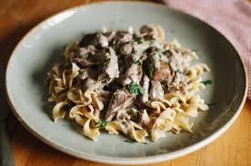

Stroganoff recipe
Home

Description
A deliciously rich and creamy beef stroganoff that's easy to prep in a slow cooker with little-to-no fuss. It smells wonderful and is tasty like no other stroganoff you've had before thanks to the addition of cream cheese along with the sour cream. Serve over hot, buttered flat noodles.
Ingredients
- Beef This slow cooker stroganoff starts with juicy, flavorful, budget-friendly beef stew meat.
- Onion A diced onion is cooked with the beef, adding bold flavor.
- Canned SoupLike so many simple recipes, this easy beef stroganoff utilizes convenient ingredients like canned cream of mushroom soup.
- Seasonings The stew meat is simply seasoned with salt and pepper. It's then slowly cooked in a creamy sauce with garlic, Worcestershire sauce, and beef bouillon.
- Herbs Chives and parsley add fresh flavor and a welcome pop of color.
- Wine Red wine intensifies and enhances the other flavors. Opt for a dry red like merlot or cabernet sauvignon.
- Cornstarch and Flour Cornstarch and all-purpose flour thicken the sauce.
- Sour Cream and Cream Cheese Sour cream and cream cheese create an indulgent, creamy texture with a subtly tangy flavor.
- Mushrooms This recipe calls for fresh mushrooms, but you can substitute drained canned mushrooms in a pinch.
- Additional Ingredients: Serve this easy beef stroganoff over egg noodles or white rice.
How to Make Slow Cooker Beef Stroganoff
- Spread beef stew meat into bottom of slow cooker crock; season with salt and pepper. Layer onion over the beef. Pour mushroom soup and water over the beef; add chives, garlic, Worcestershire sauce, and beef bouillon.
- Whisk red wine, cornstarch, and flour together in a small bowl; pour over the mixture in the slow cooker.
- Cook on Low for 6 to 7 hours. Stir sour cream, mushrooms, cream cheese, and parsley into the beef mixture; continue cooking for 1 hour more.
- Serve over pasta